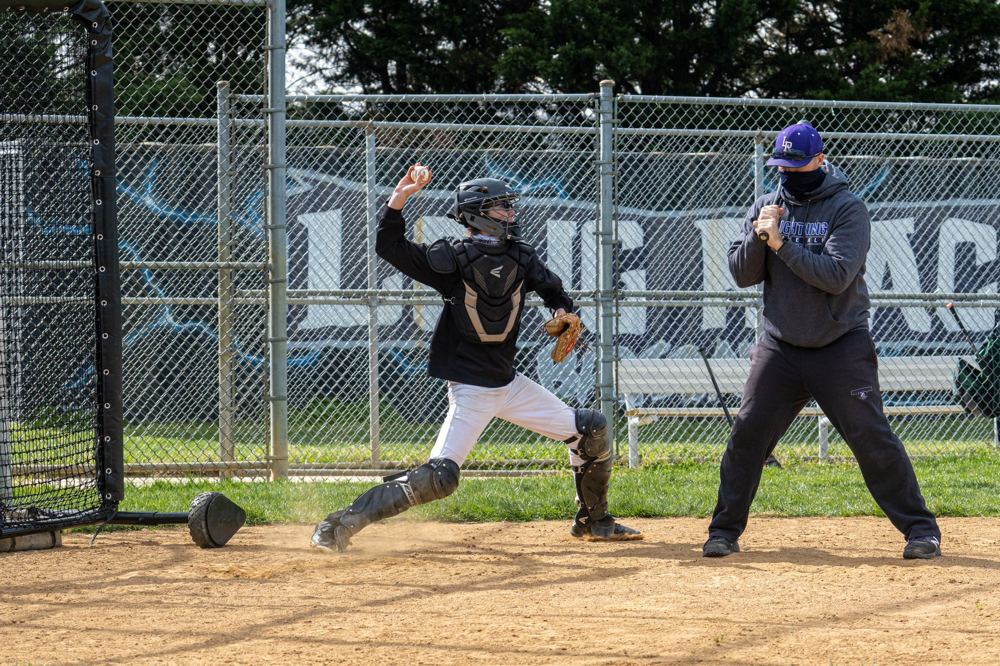

Building a foundation with strength training
Strength is the engine that drives power in baseball. Whether you are a pitcher trying to increase velocity or a hitter looking to drive the ball into the gaps, your muscular foundation is critical. However, baseball strength training is not about becoming a bodybuilder; it is about functional power that translates to explosive movements on the field.
Focus on compound movements that engage multiple muscle groups simultaneously. These exercises build the core stability and limb strength necessary for the rotational mechanics used in swinging and throwing. Aim for a mix of heavy lifting to build raw strength and moderate weight with higher repetitions to build muscular endurance.
Developing explosive speed and agility
In baseball, speed is rarely about running a long distance. It is about the first three steps. Whether you are stealing second base or sprinting to first after a ground ball, your ability to accelerate from a stationary position is what matters most. Your baseball workout routines must prioritize short-burst, high-intensity movements.
Speed in baseball is not measured in miles per hour over a long distance, but in the explosive milliseconds it takes to react to a pitch or a hit.
Enhancing throwing mechanics and arm care
The most common injury in baseball is related to the shoulder and elbow. Therefore, a significant part of your routine must be dedicated to arm care and mobility. You cannot perform at your peak if you are constantly sidelined by overuse injuries. This means warming up your rotator cuff and strengthening the muscles that stabilize your throwing arm.
Incorporate resistance band work into your daily routine. These bands allow you to perform controlled, low-impact movements that increase blood flow to the tendons and strengthen the small stabilizing muscles. Consistency with arm care is much more important than the intensity of a single session.
The importance of core stability and rotation
The core is the bridge that transfers energy from your legs to your arms. In baseball, almost every movement—from a heavy swing to a high-velocity throw—relies on rotational power. If your core is weak, you will lose energy in that transfer, resulting in less power and a higher risk of injury to your back and hips.
Effective core training for baseball players should move beyond simple sit-ups. You need to train your body to handle rotational forces and maintain stability while moving. Anti-rotational exercises are just as important as rotational ones because they teach your body how to resist unwanted movement and stay balanced.
Creating a balanced weekly schedule
A common mistake is training too hard for too long without allowing for recovery. An effective schedule balances high-intensity days with active recovery. You should schedule your heaviest strength sessions on days when you are not performing high-volume throwing or high-speed sprinting to avoid central nervous system fatigue.
As you progress through the season, your training should shift. During the off-season, focus on building maximum strength and correcting weaknesses. As the season approaches, shift toward maintenance and explosive speed. Once the season is underway, the goal is to stay healthy and maintain the gains you made during the winter.
If you are a coach looking to implement these concepts for a group, remember that individual needs vary. For more detailed guidance on organizing team activities, check out our guide on the Best Baseball Practice Plans for Young Teams at https://dhyey.bond/blog/best-baseball-practice-plans-for-young-teams/.
See Also
If you enjoyed this Baseball Guide article, check out Best Baseball Practice Plans for Young Teams for more useful reading.